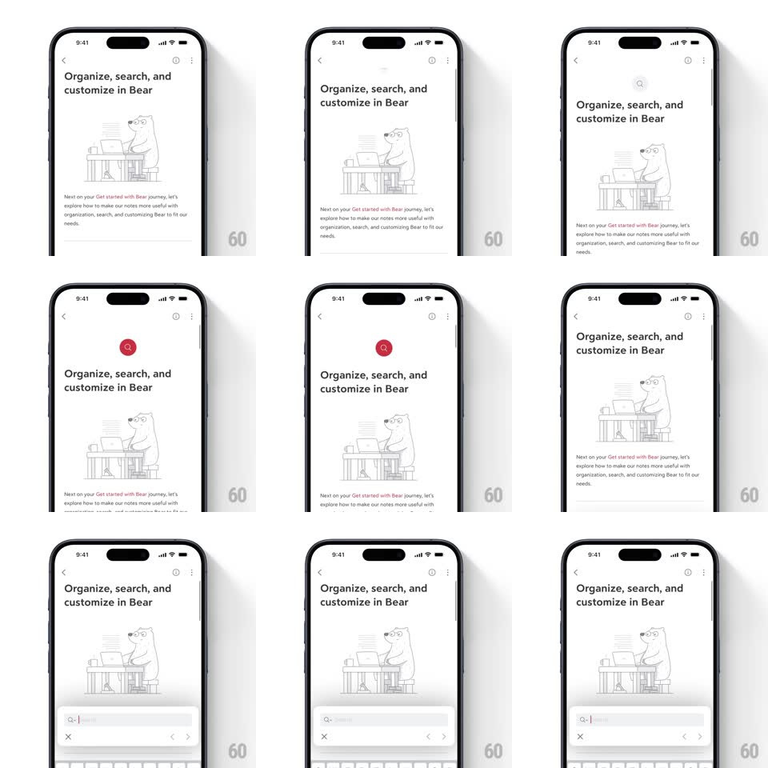

Media
Frame-by-frame

Rebuild this interaction 1:1: Bear's pull-to-search gesture - pulling down on a note page first reveals a small red dot at the top that stretches into a red search bubble with a magnifier, then on release a search bar with a blinking cursor slides up from the bottom above the keyboard.

Rebuild this interaction 1:1: Bear's pull-to-search gesture - pulling down on a note page first reveals a small red dot at the top that stretches into a red search bubble with a magnifier, then on release a search bar with a blinking cursor slides up from the bottom above the keyboard.
## Integration
Integration: stack-agnostic spec - springs given as stiffness/damping, timed motions as duration + curve; map every value to your framework and animation library of choice.
## Scene
A Bear onboarding page ("Organize, search, and customize in Bear", illustration of a bear at a desk). Pulling down reveals the search affordance at the top; releasing docks a search field with mic and clear buttons above the system keyboard at the bottom.
## Motion spec
Pattern: pull-to-reveal with morphing affordance, bottom-docked search field.
- Pull down (rubber-band): page content translates with the finger with diminishing resistance (~50% damping); a red dot fades in near the top center, vertically stretched in proportion to the pull distance.
- Past ~60pt pull: the dot morphs into a red rounded bubble containing a white magnifier, springing into place (~340/22, ~350ms).
- Release past threshold: page bounces back (spring ~380/26); the bubble collapses as a search bar slides up from the bottom edge with the keyboard (matching keyboard timing, ~350ms ease-out).
- The search field arrives with the cursor already blinking; cancel (x) sits inside the field, with prev/next match arrows beside it.
## Calibration
- The red dot is Bear's brand color and its stretch tracks the finger 1:1 before the morph - never snap straight to the bubble.
- Search docks at the bottom (above the keyboard), not at the top where the affordance appeared.
## Reduced motion
Skip the dot-stretch preview; pull past threshold fades the search bar in above the keyboard (200ms).
## Don't miss
- The affordance appears only while pulling - no persistent search button on the page.
- The magnifier bubble's pop uses a visible spring overshoot.